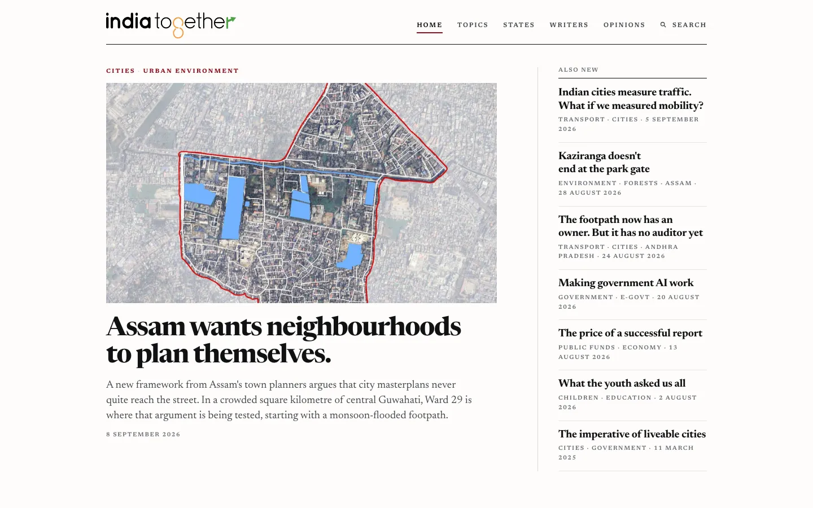
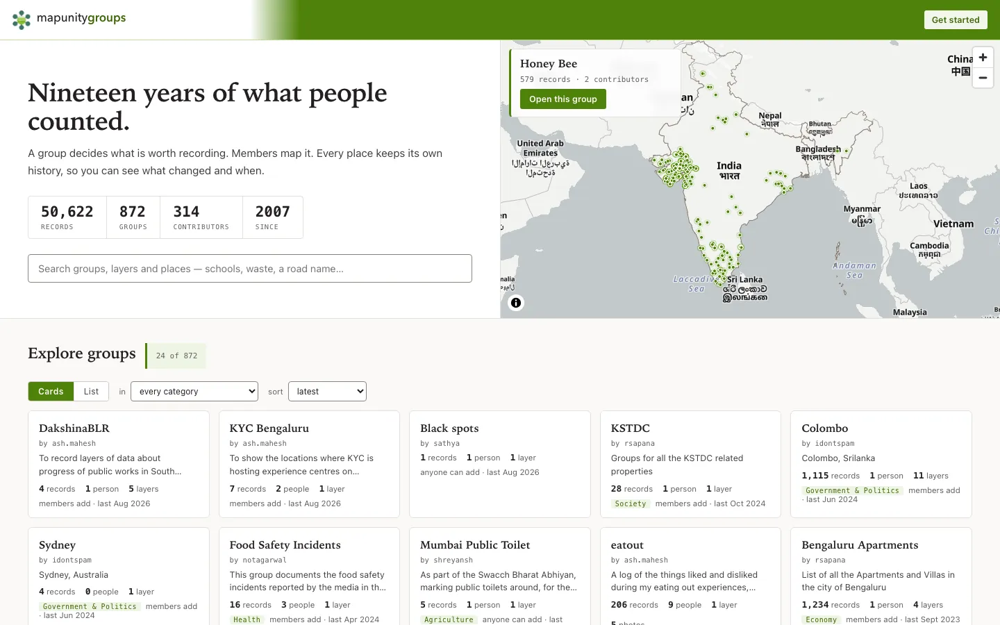
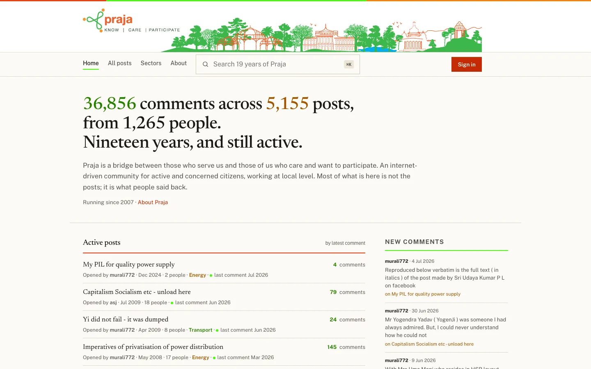

Urban Morph Presents
SyntheSYS
AI-Powered Urban Intelligence
AI-powered services for orchestrating and coordinating urban solutions, and accelerating progress at scale — ward to nation.
The Vision
Synthesis of Data, Systems Thinking, and AI
SyntheSYS combines the rigour of synthesis — the combining of diverse conceptions into a coherent whole — with systems thinking to help governments, philanthropies, and citizens understand progress and take action. It is an offering in service of people, planet, and progress in the age of AI.
By harnessing Large Language Models to process open government data, field research, and community intelligence, SyntheSYS creates actionable baselines and development roadmaps at every scale: from individual wards and neighbourhoods to districts, states, and the nation.
Core Capabilities
How AI Powers SyntheSYS
Knowledge Synthesis
LLMs process government open data, economic surveys, and field research into actionable baselines and development roadmaps at district, state, and national scale.
Intelligent Automation
AI classifies, routes, and prioritises civic inputs — from municipal complaints to waste management logistics — without constantly altering rules.
Multi-Scale Monitoring
Ward-level to nation-level progress tracking with role-based views for district collectors, ministers, urban planners, and citizens alike.
The Platforms
Built for Impact at Every Scale

KDEM — Karnataka Digital Economy Mission
Strategic dashboard for Karnataka's journey from a $198B digital economy today to $414B by 2032, digital economy and biotechnology combined. Every figure is sourced to MoSPI, RBI and state data, and the Beyond Bengaluru view tracks the emerging clusters that have to carry the growth.
- Live GSDP, digital-export and target-gap tracking for a $345B state
- Beyond Bengaluru: district and vertical views for emerging clusters
- Sources tab linking every number to its public origin

India Together
The news in proportion. India's independent public-interest journalism archive, publishing since 1998 and now revived with technology support from Urban Morph: reports, opinions, interviews and reviews searchable by topic, state and writer, with new reporting on cities, transport, environment and governance.
- 3,790 articles from 1998 to 2026 across 91 subjects and 26 states
- Reports, opinions, reviews, interviews and editorials by named writers
- Articles remain the copyright of their authors

mapunitygroups
Nineteen years of what people counted. MapUnity's community mapping platform, revived: a group decides what is worth recording, members map it, and every place keeps its own history so you can see what changed and when. From public works in South Bengaluru to food-safety incidents across the country.
- 50,622 records across 872 groups from 314 contributors
- Layers, places and photos, with a change history for every place
- Open or member-only groups, searchable by category and place

Praja
A bridge between those who serve us and those of us who care and want to participate. An internet-driven community for active and concerned citizens working at the local level, running since 2007 and revived with its full history intact. Most of what is here is not the posts; it is what people said back.
- 36,856 comments across 5,155 posts from 1,265 people
- Threads organised by sector: transport, energy, governance, planning
- Nineteen years of civic discussion, still active in 2026

NOTF — Neighbourhoods of the Future
A framework for citizens to take charge of the common good at the neighbourhood level: steer infrastructure and behaviour, connect with experts, and build neighbourhoods resilient to climate shock. Now a network across 13 cities, with an AI assistant that finds communities and resources.
- 65+ tonnes of waste diverted, 60,000+ kg of CO₂ prevented, 12,000+ trees planted
- 15 climate projects in the catalogue and 10+ city climate action plans
- NOTF Assistant to find communities and resources, with a language switcher

GreensBrowns
Every leaf has a second life. Bengaluru's circular network for green waste connects apartments and tech parks with processors who need organic waste for composting: verified pickups, real-time tracking and complete compliance from the building's garden to the processor's facility. Built by A-Gain, powered by Urban Morph.
- 22+ partner communities, 14 vehicles in the fleet, 3 active processors
- 100% trackable waste with verified pickups and geo-located handovers
- Role-based dashboards for generators, transporters and processors

CFAM — Council for Active Mobility
Streets for people, built into law. India's National Active Mobility Framework turns policy into programmes: a model framework for states, a tracker of who has notified rules and who has not, and the campaign to table the Karnataka Active Mobility Bill, the flagship state-level instrument.
- State tracker: 1 state notified, 35 yet to act
- Karnataka Bill: 2.5 m minimum footpaths in school zones, 1.5 m cyclist overtaking distance
- Ecosystem of partner organisations across seven work tracks, with the Altmo app for participation
Built for the Public
Five Open Tools You Can Use Right Now
Free, no login, open source, built by Urban Morph co-founder Sathya Sankaran as public goods. Most are queryable from AI assistants via MCP, so the same public data that powers SyntheSYS is available to anyone.
Stories & Investigations
Nine Data Stories on How India Actually Works
Data-driven investigations into forests, farmers, livelihoods and rights: what the official numbers say once you read all of them together.
Ready to understand your district, city, or state better?
SyntheSYS is in service of people, planet, and progress. Let's build intelligence for your region.